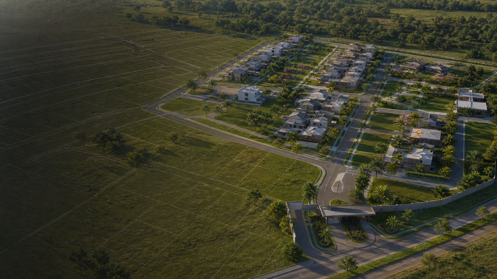

Visão aérea
O vídeo começa alto, como se fosse captado por drone, mostrando o lote antes da implantação.

Material da Aula
Guia prático para criar um vídeo em estilo arquitetônico mostrando um terreno vazio se transformando gradualmente em um condomínio completo com câmera aérea e movimentos cinematográficos.
01
O objetivo é criar uma apresentação visual onde o condomínio nasce aos poucos dentro de um terreno vazio. A cena começa com uma visão aérea distante, depois a câmera se aproxima e revela marcações, ruas internas, fundações, blocos de casas, paisagismo, iluminação e o empreendimento finalizado.
O vídeo começa alto, como se fosse captado por drone, mostrando o lote antes da implantação.
Linhas, ruas, fundações e casas surgem em ordem lógica, com leitura clara de progresso.
Diferente da montagem fixa, este modelo usa zoom, tilt, orbit, fly-through e pull-back.
O resultado precisa parecer institucional, arquitetônico, realista e pronto para lançamento imobiliário.
02
O vídeo deve parecer uma mistura de render imobiliário cinematográfico com animação aérea de implantação urbana.
Mostra planejamento, implantação, divisão de lotes e evolução da construção.
Valoriza o empreendimento com linguagem organizada, limpa e comercial.
Cria sensação de transformação rápida, mas com ritmo suave e controle visual.
03
O processo combina planejamento, geração de frames, animação com movimento de câmera e finalização.
Story e prompts
Monta a lógica do storyboard, cria prompts técnicos e define os movimentos de câmera.
Frames visuais
Gera terreno vazio, demarcação, ruas, fundações, blocos de casas e condomínio finalizado.
Animação
Anima frames com zoom, drone shot, orbit, fly-through, tilt, pan e transições graduais.
Finalização
Organiza vídeos, ajusta ritmo, trilha, efeitos sonoros, textos, cor e exportação final.
04
Este projeto deve ser feito em modo avançado. A câmera não precisa ficar parada: o segredo é criar uma progressão cinematográfica que acompanha a implantação do condomínio.
Comece com visão aérea ampla do terreno vazio.
Use zoom suave e descida para preparar a transformação.
Revele marcações, ruas, fundações e blocos de casas.
Finalize com pull-back aéreo mostrando o condomínio pronto.
05
Sequência de cenas para transformar o terreno vazio em um empreendimento completo.
Drone alto mostra vegetação, terra, rua próxima ou área aberta.
A câmera desce ou avança para o lote, mantendo o terreno vazio.
Linhas arquitetônicas, lotes, ruas internas e áreas comuns aparecem.
Ruas, calçadas, guias, circulação e iluminação começam a surgir.
Fundações surgem em várias áreas, organizadas por blocos.
Primeiro um bloco de casas, depois outro, com implantação planejada.
Telhados, portas, janelas, pintura, revestimentos e fachadas entram.
Grama, árvores, jardins, portaria, playground, piscina ou área comum.
A câmera sobe e revela o empreendimento inteiro em visão premium.
06
Movimentos sugeridos para dar cara de apresentação arquitetônica profissional.
Mostra o terreno vazio de longe, com visão alta e ampla do espaço.
Aproxima do terreno com movimento suave, como um drone entrando no local.
Inclina a câmera para uma leitura mais vertical, parecida com planta baixa no terreno.
Gira levemente quando as primeiras casas aparecem, criando profundidade.
Atravessa ruas internas para mostrar escala, fachadas, circulação e paisagismo.
A câmera se afasta e sobe para revelar o condomínio inteiro pronto.
07
Use este comando para gerar uma sequência personalizada de prompts técnicos.
Preciso criar um vídeo de montagem gradual arquitetônica para um condomínio. A cena deve começar com uma visão aérea de um terreno vazio, como se fosse captada por drone. Depois, a câmera deve se aproximar do terreno e mostrar o condomínio sendo construído progressivamente. Quero que o vídeo tenha movimentos cinematográficos de câmera: drone shot, zoom-in, tilt-down, orbit parcial, fly-through pelas ruas internas e pull-back final. O condomínio deve surgir por etapas: demarcação do terreno, ruas internas, fundações, blocos de casas, fachadas, calçadas, paisagismo, iluminação e área comum. Preciso de prompts em inglês para criar os frames no Gemini/Nano Banana e prompts JSON para animar no Hailuo/Veo. O resultado deve parecer uma apresentação profissional de arquitetura, com visual realista, premium, organizado e cinematográfico.
08
Prompts em inglês para gerar os frames principais no Gemini/Nano Banana.
Cria a imagem inicial do terreno sem construção.
Create a realistic aerial drone view of an empty construction site prepared for a future residential condominium. The scene should show a large open land area, natural soil, grass, surrounding streets, nearby vegetation, and a clean environment. The camera should be positioned high above the terrain, with a wide cinematic view, slightly angled downward, showing the full scale of the land. The image must look realistic, professional, and suitable for an architectural presentation. Do not add houses, buildings, roads inside the condominium, people, cars, construction machines, text, signs, or logos. Keep the terrain empty and ready for development.
Gera um frame mais próximo, preparando a entrada no lote.
Create a realistic aerial drone view of the same empty construction terrain, but from a closer position. The camera should feel like it has moved forward and slightly downward toward the center of the land. Keep the same environment, terrain shape, surrounding streets, vegetation, lighting, and general composition. The land must still be empty, with no houses or structures yet. The image should feel cinematic, clean, professional, and realistic, as if preparing for an architectural development reveal.
Mostra a planta começando a surgir sobre o terreno.
Using the aerial view of the empty terrain as reference, add subtle architectural ground markings for a future residential condominium. Show clean white or light-colored planning lines on the ground, defining internal streets, house lots, common areas, sidewalks, entrances, and block divisions. Keep the camera angle, terrain, environment, surrounding streets, vegetation, lighting, and scale consistent. Do not add buildings or houses yet. The result should look like a professional architectural site planning overlay physically marked on the terrain, realistic and integrated into the ground.
Transforma a marcação em estrutura urbana inicial.
Using the marked terrain image as reference, add the first stage of internal condominium infrastructure. Convert the planning lines into realistic internal streets, compacted soil paths, early sidewalks, curb outlines, drainage channels, and basic lot divisions. Keep the aerial perspective, lighting, surrounding environment, vegetation, and terrain scale consistent. Do not add houses yet. The scene should look like the early infrastructure stage of a residential condominium construction site.
Mostra os primeiros blocos sendo preparados.
Using the condominium infrastructure image as reference, add realistic house foundations in several planned lots. The foundations should appear in organized blocks, aligned with the internal streets and lot divisions. Show concrete bases, structural outlines, and early construction platforms. Keep the same aerial perspective, terrain, roads, sidewalks, lighting, background, and environment. Do not add full houses yet. The result should show the condominium beginning to take shape through multiple house foundations distributed across the site.
Monta as primeiras casas em uma área do condomínio.
Using the condominium foundation image as reference, add the first completed block of modern residential houses on one side of the condominium. The houses should be aligned with the foundations, roads, and lot divisions. Keep the rest of the lots in foundation stage. The architecture should be modern, clean, realistic, and suitable for a residential condominium. Maintain the same aerial perspective, lighting, environment, road layout, and scale. Do not add people, cars, text, signs, or logos.
Expande a construção para outras áreas.
Using the previous condominium image as reference, add more residential houses in additional blocks across the terrain. The new houses should appear organized, aligned with the internal roads, and consistent with the architectural style of the first block. Some lots may still show foundations, while other blocks are now completed. Keep the same camera perspective, lighting, environment, terrain shape, road layout, and visual consistency. The scene should show the condominium construction progressing block by block.
Mostra praticamente todas as casas prontas.
Using the previous image as reference, complete almost all residential blocks of the condominium. Add modern houses across the planned lots, keeping consistent architecture, spacing, proportions, roof style, facade design, and alignment with the internal streets. Add basic sidewalks, driveways, street lighting, and clean paved roads. Keep the same aerial perspective, lighting, environment, terrain scale, and realistic visual style. Do not add people, cars, text, signs, or logos.
Deixa o condomínio com aparência comercial premium.
Using the almost completed condominium image as reference, add final landscaping and shared amenities. Include grass, trees, small gardens, decorative plants, a clean entrance gate, a modern guardhouse, sidewalks, streetlights, and a common leisure area such as a small playground, pool area, or community space. Keep the architecture consistent, realistic, clean, and premium. Maintain the same aerial perspective, lighting, environment, road layout, and scale. Do not add people, cars, text, signs, or logos.
Gera o frame final para apresentação.
Create the final completed version of the residential condominium from a cinematic aerial drone perspective. The condominium should look fully finished, with all houses completed, internal roads paved, sidewalks clean, landscaping finished, entrance gate complete, guardhouse ready, common areas polished, and exterior lighting subtly visible. The scene must look like a professional real estate architectural presentation, realistic, premium, organized, visually attractive, and ready for marketing. Keep the environment natural and consistent. Do not add people, cars, text, signs, logos, or unrealistic elements.
09
Prompts para Hailuo/Veo, sempre conectando um frame inicial a um frame final.
{
"animation": {
"start_frame": "aerial_empty_land_wide_view",
"end_frame": "aerial_empty_land_closer_view",
"animation_type": "cinematic_drone_approach",
"camera_movement": "slow aerial zoom-in with gentle downward movement",
"description": "Create a smooth cinematic drone movement starting from a high wide aerial view of the empty land and slowly moving forward and downward toward the center of the terrain. The land remains empty during this shot. Keep the motion elegant, stable, realistic, and suitable for a professional architectural presentation."
}
}
{
"animation": {
"start_frame": "aerial_empty_land_closer_view",
"end_frame": "aerial_land_with_condominium_planning_lines",
"animation_type": "gradual_architectural_overlay",
"camera_movement": "slow tilt-down into semi top-down view",
"description": "Animate the gradual appearance of architectural planning lines on the empty terrain. Internal streets, lots, blocks, sidewalks, entrance area, and common spaces should draw themselves smoothly on the ground like a professional site plan being revealed. The camera slowly tilts downward toward a more top-down planning view while keeping the motion stable and cinematic."
}
}
{
"animation": {
"start_frame": "aerial_land_with_condominium_planning_lines",
"end_frame": "aerial_land_with_internal_roads_and_infrastructure",
"animation_type": "gradual_infrastructure_construction",
"camera_movement": "slow forward drone movement with slight parallax",
"description": "Animate the transformation of the ground planning lines into realistic internal roads, sidewalks, curbs, drainage details, and early infrastructure. The construction should appear gradually across the terrain, following the marked layout. The camera moves slowly forward with subtle parallax, creating depth while preserving a professional architectural presentation style."
}
}
{
"animation": {
"start_frame": "aerial_land_with_internal_roads_and_infrastructure",
"end_frame": "aerial_land_with_house_foundations_by_blocks",
"animation_type": "block_by_block_foundation_assembly",
"camera_movement": "smooth aerial orbit with slow zoom-in",
"description": "Animate house foundations appearing across the condominium lots in organized blocks. The concrete bases should emerge from the ground, section by section, following the planned layout and aligning perfectly with the internal roads. The camera performs a slow aerial orbit with a gentle zoom-in, making the construction feel dynamic and premium."
}
}
{
"animation": {
"start_frame": "aerial_land_with_house_foundations_by_blocks",
"end_frame": "aerial_condominium_with_first_house_block_completed",
"animation_type": "gradual_house_assembly",
"camera_movement": "drone push-in toward the first block",
"description": "Animate the first block of residential houses assembling on top of the foundations. Walls, roofs, windows, doors, facade materials, and exterior finishes should appear progressively and lock into place. The camera pushes in smoothly toward the first completed block, giving the feeling of a professional architectural reveal."
}
}
{
"animation": {
"start_frame": "aerial_condominium_with_first_house_block_completed",
"end_frame": "aerial_condominium_with_multiple_house_blocks_completed",
"animation_type": "progressive_block_construction",
"camera_movement": "continuous aerial tracking movement across the condominium",
"description": "Animate multiple blocks of houses being built progressively across the condominium. Each block should assemble in sequence, with foundations transforming into complete modern houses. The camera tracks smoothly across the site, following the construction as it spreads from one block to another. Keep the motion elegant, realistic, and visually organized."
}
}
{
"animation": {
"start_frame": "aerial_condominium_with_multiple_house_blocks_completed",
"end_frame": "near_complete_condominium_with_roads_sidewalks_and_houses",
"animation_type": "cinematic_condominium_reveal",
"camera_movement": "drone fly-through entering the internal streets",
"description": "Create a cinematic drone fly-through movement entering the condominium streets. As the camera moves forward, complete the roads, sidewalks, driveways, streetlights, and facade details. The houses should feel aligned, realistic, and premium. The movement should be continuous, smooth, and architectural, as if presenting the development to a client."
}
}
{
"animation": {
"start_frame": "near_complete_condominium_with_roads_sidewalks_and_houses",
"end_frame": "condominium_with_landscaping_gate_and_common_areas",
"animation_type": "gradual_finalization",
"camera_movement": "slow orbit around the main entrance and common area",
"description": "Animate the final landscaping and shared amenities appearing across the condominium. Grass, trees, gardens, entrance gate, guardhouse, leisure area, exterior lighting, and decorative details should gradually appear. The camera performs a slow orbit around the main entrance and common area, creating a premium real estate presentation effect."
}
}
{
"animation": {
"start_frame": "condominium_with_landscaping_gate_and_common_areas",
"end_frame": "completed_condominium_final_aerial_view",
"animation_type": "final_architectural_reveal",
"camera_movement": "smooth pull-back and aerial rise",
"description": "Create a final cinematic reveal of the completed residential condominium. The camera slowly pulls back and rises into a wide aerial drone view, revealing the entire finished development. The condominium should look complete, premium, organized, realistic, and ready for a professional real estate presentation. Maintain smooth motion, balanced lighting, and a polished architectural style."
}
}
10
Use estes prompts para versões contínuas, foco por blocos, visão aérea e cenas de detalhe.
Create a continuous cinematic architectural animation showing an empty land gradually transforming into a completed residential condominium. Start with a wide aerial drone view of the empty terrain. The camera slowly moves forward and downward toward the land. As the camera approaches, architectural planning lines appear on the ground, followed by internal roads, sidewalks, lot divisions, foundations, and residential blocks. The houses should assemble progressively by blocks, with walls, roofs, windows, doors, facade finishes, landscaping, entrance gate, guardhouse, streetlights, and common areas appearing in a realistic and organized construction sequence. The camera movement should feel continuous and premium, combining aerial drone approach, smooth zoom-in, subtle orbit, fly-through through the internal streets, and final pull-back reveal. The final shot should rise and reveal the entire completed condominium from above. Keep everything realistic, clean, modern, elegant, and suitable for a professional architectural real estate presentation. Do not add people, cars, text, signs, logos, or unrealistic objects.
Animate the construction of a residential condominium by blocks. Starting from a prepared terrain with internal roads and foundations, make the houses appear progressively in organized groups. Each block should assemble in a clean architectural sequence: foundations, walls, roof, windows, doors, facade finishing, sidewalks, driveway details, and landscaping. The camera should move smoothly across the condominium, following the construction from one block to the next. The animation should feel like a professional architectural reveal, with realistic scale, consistent lighting, premium design, and organized urban planning. Do not add people, cars, text, signs, or logos. Keep the focus on the architectural transformation and the gradual completion of the condominium.
Create a realistic cinematic aerial drone view of a modern residential condominium development. The scene should show organized house blocks, internal paved roads, sidewalks, landscaping, entrance gate, guardhouse, common leisure area, and clean architectural design. The image should look like a professional real estate render blended with realistic drone photography. Use natural daylight, balanced shadows, premium composition, and high architectural detail. The layout must look planned, organized, and visually attractive. Do not add people, cars, text, signs, logos, or unrealistic elements.
Planos curtos para deixar o vídeo menos repetitivo.
Close-up 1 - Markings on the terrain: Create a cinematic close-up of architectural planning lines appearing on the soil of a future residential condominium site. Show lot divisions, internal road markings, and construction planning details. The image should feel realistic, premium, and suitable for an architectural presentation. Close-up 2 - House foundation: Create a realistic close-up of a house foundation being formed inside a residential condominium construction site. Show concrete base lines, structural outlines, clean construction details, soil texture, and accurate architectural proportions. Close-up 3 - Wall assembly: Create a cinematic close-up of a modern house wall being assembled during construction. Show masonry, concrete, structural details, clean edges, and realistic material texture. The scene should feel premium and architectural. Close-up 4 - Finished facade: Create a cinematic close-up of a modern residential facade inside a condominium. Show clean paint, architectural cladding, window frames, roof details, entrance lighting, and premium exterior materials. Close-up 5 - Internal condominium street: Create a professional cinematic shot of an internal condominium street with modern houses on both sides, clean sidewalks, landscaping, streetlights, and premium residential architecture. The camera should feel like a smooth drone fly-through. Close-up 6 - Condominium entrance: Create a realistic architectural shot of a modern residential condominium entrance gate and guardhouse. Show clean landscaping, premium materials, elegant lighting, organized sidewalks, and a professional real estate presentation style.
11
Roteiro de duração para um vídeo de aproximadamente 55 segundos.
Visão aérea ampla do terreno vazio.
Drone aproxima e desce em direção ao lote.
Linhas de implantação aparecem no solo.
Ruas internas e infraestrutura começam a surgir.
Fundações aparecem em vários blocos.
Primeiro bloco de casas se monta.
Outros blocos surgem em sequência.
Câmera atravessa as ruas internas mostrando as casas.
Paisagismo, portaria, área comum e revelação aérea final.
12
Organize os vídeos na ordem do storyboard e use cortes suaves para parecer que a câmera continua o movimento.
Para Reels, mantenha entre 30 e 45 segundos. Para apresentação de projeto, pode chegar a 60 ou 90 segundos.
Use trilha moderna, institucional, elegante ou cinematográfica, sem roubar foco do projeto.
Use whoosh leve, construção suave, impacto limpo, transição tecnológica, vento de drone e brilho sutil.
Aplique visual limpo e premium, com nitidez, contraste equilibrado, verdes naturais e céu agradável.
Use frases curtas: implantação do empreendimento, evolução da construção, casas modernas e área comum completa.
Exporte em 1080x1920 para Reels, Stories e TikTok.
Exporte em 1920x1080 para YouTube, apresentação e site.
Use 4K horizontal se a ferramenta permitir e o projeto pedir acabamento de render.
13
Antes de finalizar, confira os pontos que sustentam a sensação de apresentação profissional.
A visão aérea precisa mostrar bem o espaço e o contexto do lote.
O movimento deve ser estável, cinematográfico e sem saltos estranhos.
A construção deve surgir em sequência: marcação, ruas, fundações, casas e acabamento.
As casas precisam manter o mesmo estilo, escala, alinhamento e proporção.
Ruas internas, calçadas, lotes, portaria e área comum precisam parecer planejados.
Evite pessoas, carros, placas, textos, logos, exagero no paisagismo e objetos aleatórios.